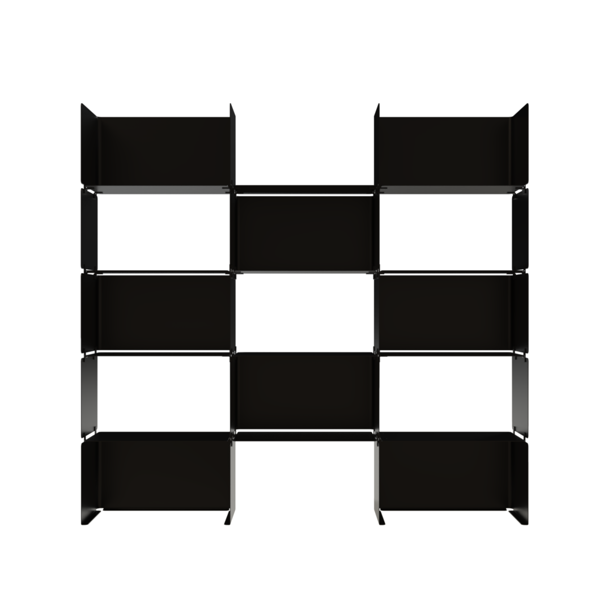
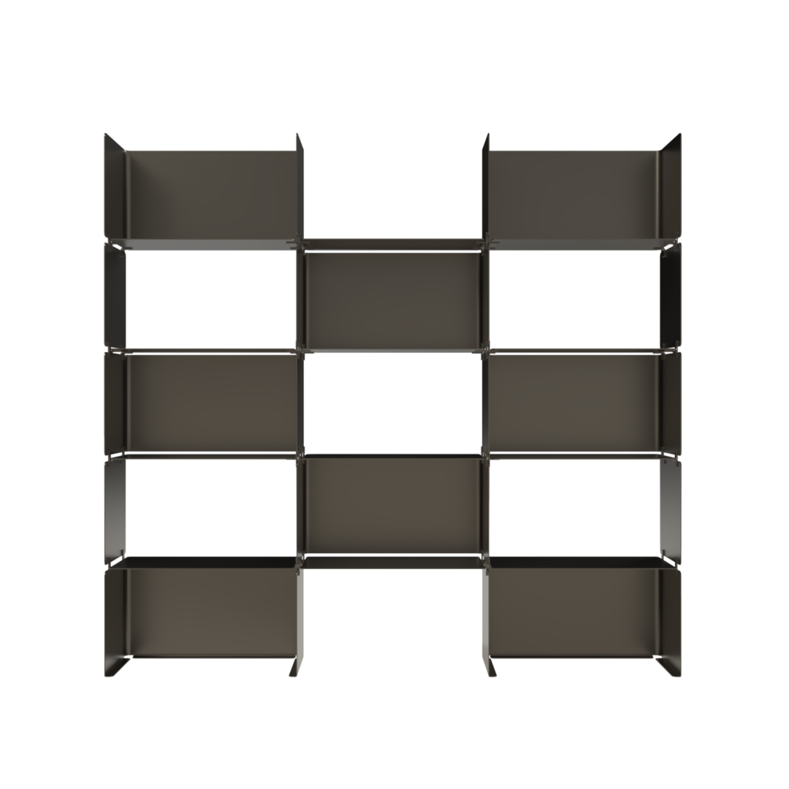
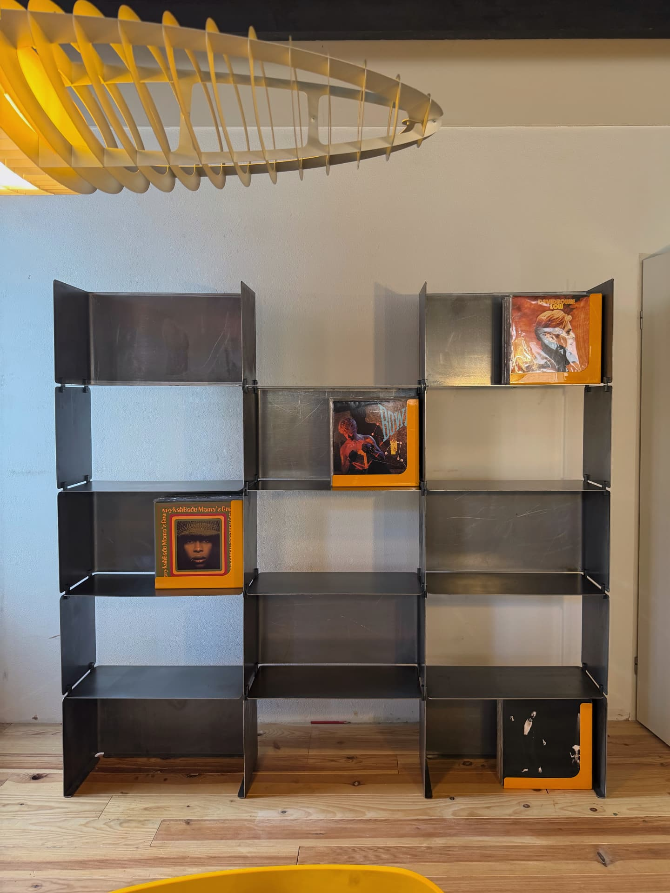
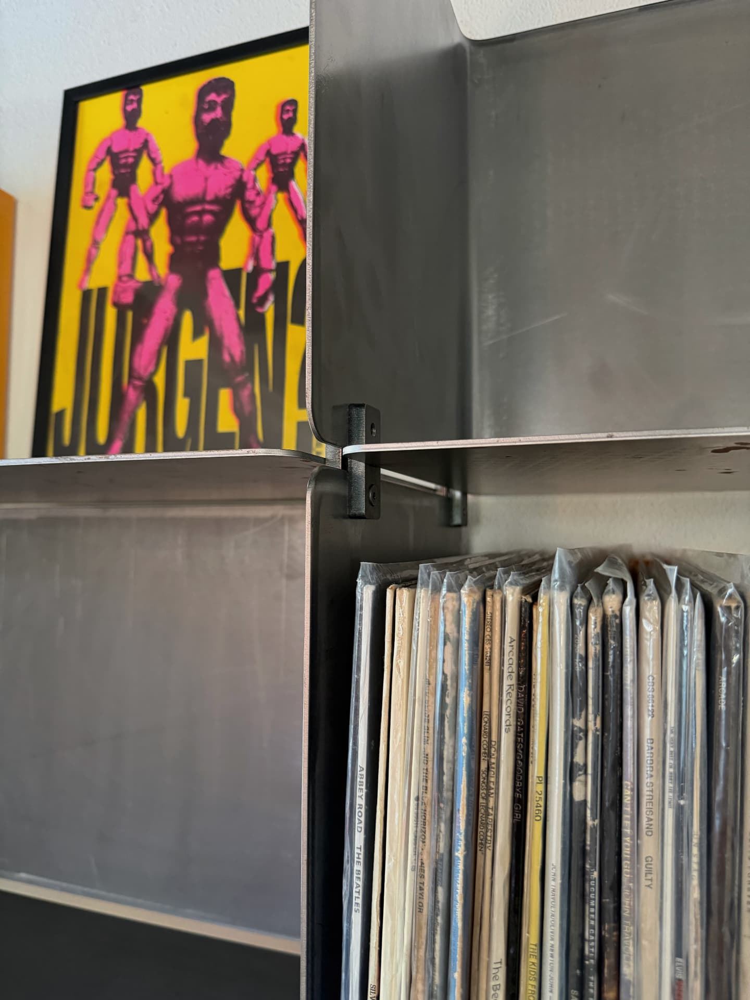
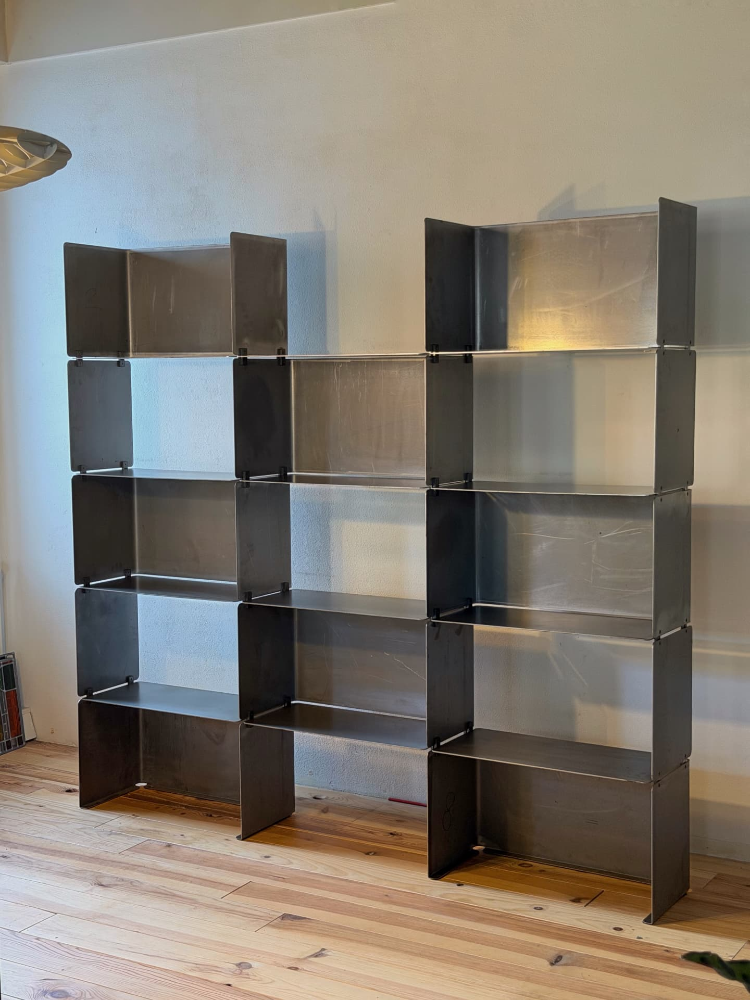
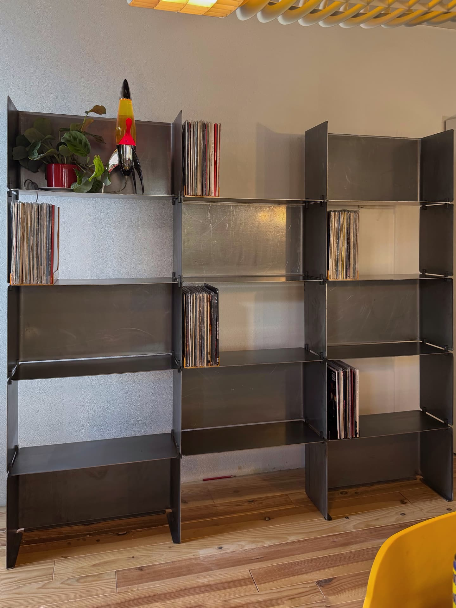
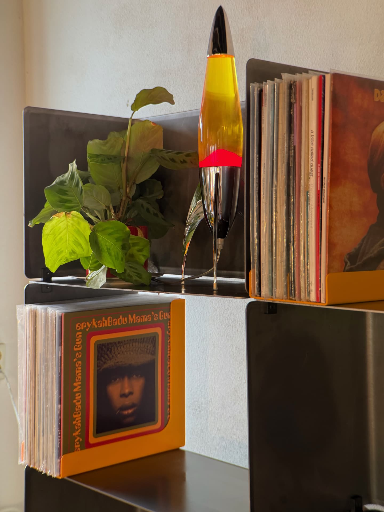

Furniture & Object Design
Stefan
Flikweert
Construction becomes character.


Shelving
System 01
The first piece in an ongoing exploration of structure, material and colour.





- Year
- 2026
- Material
- Untreated steel
- Construction
- Modular steel construction
- Function
- Storage / display
- Status
- Prototype / first edition
A piece of furniture that ages with its designer.
Shelving System 01 is built from bent steel sheet that locks into itself. The folds that give each panel its strength are left visible; the joints are where you can read how the piece stands up.
The steel is untreated on purpose. It will oxidise, mark and darken with use. I am keeping this prototype, and I intend to watch it change — alongside the practice it started. It is not presented as a finished product, but as the first documented object in a body of work.
Designer and maker. The prototype is not a step towards the design — it is part of it.
-
01
Idea →
A question about structure, not a picture of a result.
Photo to come — idea -
02
Drawing →
Proportion and connection, worked out by hand and on screen.
Photo to come — drawing -
03
Prototype →
Cut, bent and assembled in the workshop.
Photo to come — prototype -
04
Testing →
Loaded, lived with, taken apart again.
Photo to come — testing -
05
Refinement →
What the making revealed goes back into the drawing.
Photo to come — refinement -
06
Object
A piece that carries the traces of how it got here.
Photo to come — object